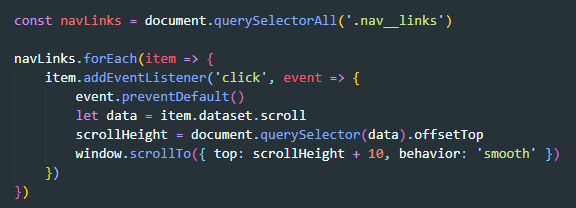

ПОДГОТОВКА
Первое что надо сделать это прописать ID у блоков к которым мы будем скролится, и у тега а в свойстве href указываем # и ID блока
Сначала мы объявляем переменную, которая будет в себе содержать псевдомассив из наших якорных ссылок
После запускаем перебор этого массива for in, где на каждой итерации элементу массива вешаем слушатель события клик, который получает callback функцию. Входным параметром этой функции будет event
Далее отключаем дефольтно еповедение элемента по которому кликнули (ссылка)
Затем создаем переменную, куда с помощью метода getAttribute получаем значение свойства href (запишется # и идентификатор)
Далее обращаемся к DOM дереву и обращаемся к элементу с помощью селектора id. После этого применяем к элементу метод scrollIntoView. Этот метод принимает в себя объект с параметрами скрола. Мы применяем только одby параметр - behaiver - который отвечает за режим скрола. Он может содержать либо smooth - медленный, либо auto - обычный